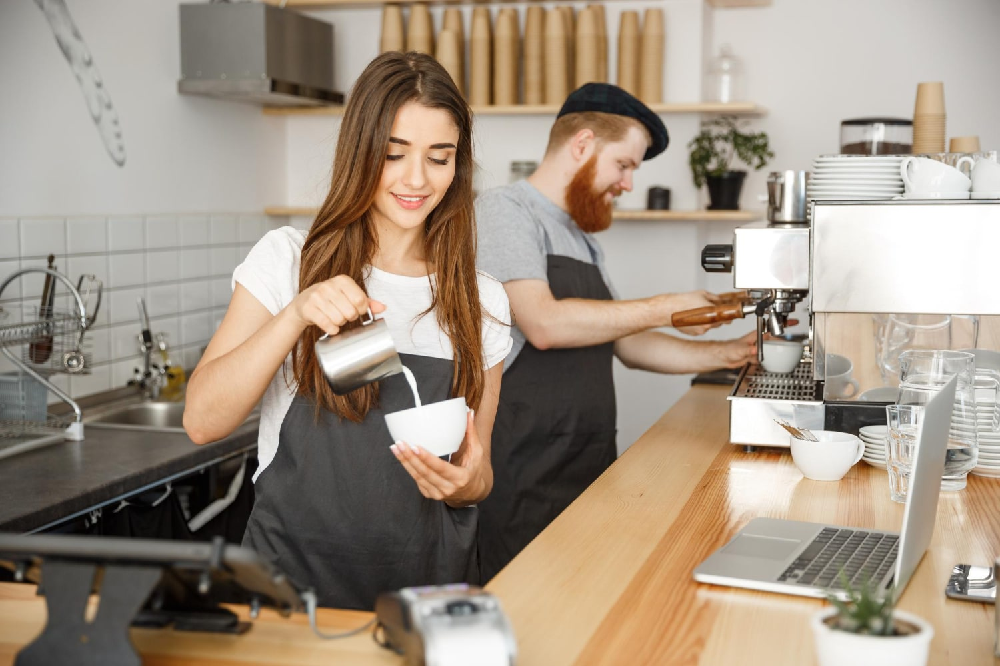

Les queriamos contar un poco de como arranco todo, como marcha y cuales son nuestros futuros proyectos.
Nuestra historia arranca por una idea loca de dos personas que era crear un cafe, ante la escasez de recursos se nos ocurrio empezar preparando todo en nuestras casas, fue un comienzo lento pero con el pasar del tiempo tuvimos muy buena respuesta de la clientela, gracias a esto pudimos crear este lugar de trabajo con maquinas y espacio. Esperamos que les guste nuestro lugar y saber un poquito de nosotros.
